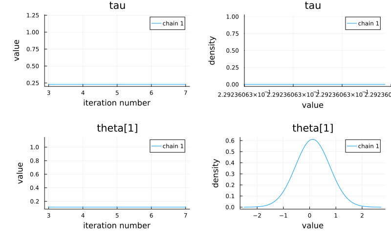

Usage with Turing.jl
This page provides a fairly high-level overview of how to use FlexiChains with Turing.jl.
Sampling
To obtain a FlexiChain from Turing.jl, you will need to specify a chain_type of FlexiChains.VNChain when performing MCMC sampling.
Let's use a non-trivial model so that we can illustrate some features of FlexiChains.
using Turing, FlexiChains
y = [28, 8, -3, 7, -1, 1, 18, 12]
sigma = [15, 10, 16, 11, 9, 11, 10, 18]
@model function eight_schools(y, sigma)
mu ~ Normal(0, 5)
tau ~ truncated(Cauchy(0, 5); lower=0)
theta ~ MvNormal(fill(mu, length(y)), tau^2 * I)
for i in eachindex(y)
y[i] ~ Normal(theta[i], sigma[i])
end
return (mu=mu, tau=tau)
end
model = eight_schools(y, sigma)
chain = sample(model, NUTS(), 5; chain_type=VNChain)FlexiChain (5 iterations, 1 chain)
↓ iter=3:7 | → chain=1:1
Parameter type VarName
Parameters mu, tau, theta
Extra keys :n_steps, :is_accept, :acceptance_rate, :log_density, :hamiltonian_energy, :hamiltonian_energy_error, :max_hamiltonian_energy_error, :tree_depth, :numerical_error, :step_size, :nom_step_size, :logprior, :loglikelihood, :logjoint
Key types
First, notice in the printout above that a FlexiChain stores 'parameters' and 'extra keys' separately. Parameters correspond to random variables of the model you sampled from, whereas other keys are extra data associated with the samples drawn (for example, the log-joint probability of each sample).
In FlexiChains, these are wrapped in the FlexiChains.Parameter and FlexiChains.Extra types respectively. Thus, the parameter mu is really stored as Parameter(@varname(mu)), and the log-joint probability is Extra(:logjoint).
For a FlexiChain{T}, all Parameter keys must wrap objects that subtype T. Extras on the other hand can wrap anything.
Accessing data
FlexiChains provides multiple different ways to access the data for a given key.
Parameters
To access parameters, the recommended way is to use VarNames to index into the chain. VarName is a data structure defined in AbstractPPL.jl, and is what Turing.jl uses to represent the name of a random variable (appearing on the left-hand side of a tilde-statement).
VarNames are most easily constructed by applying the @varname macro to the name of the variable that you want to access. For example, this directly gives us the value of mu in each iteration as a plain old vector of floats.
chain[@varname(mu)]┌ 5×1 DimArray{Float64, 2} ┐
├──────────────────────────┴────────────────────────── dims ┐
↓ iter Sampled{Int64} 3:7 ForwardOrdered Regular Points,
→ chain Sampled{Int64} 1:1 ForwardOrdered Regular Points
└───────────────────────────────────────────────────────────┘
↓ → 1
3 0.918441
4 0.918441
5 0.918441
6 0.918441
7 0.918441When looking up a parameter, you do not need to wrap the VarName in FlexiChains.Parameter(...): this will be automatically done for you. But Extra keys always need to be wrapped.
Indexing into a FlexiChain returns a DimensionalData.DimMatrix. This behaves exactly like a regular Matrix, but additionally carries extra information about its dimensions.
This allows you to keep track of what each dimension means, and also allows for more advanced indexing operations, which are described in the 'indexing' page.
For vector-valued parameters like theta, this works in exactly the same way, except that you get a DimMatrix of vectors.
chain[@varname(theta)]┌ 5×1 DimArray{Vector{Float64}, 2} ┐
├──────────────────────────────────┴────────────────── dims ┐
↓ iter Sampled{Int64} 3:7 ForwardOrdered Regular Points,
→ chain Sampled{Int64} 1:1 ForwardOrdered Regular Points
└───────────────────────────────────────────────────────────┘
↓ → … 1
3 [0.115007, -0.543556, 0.989255, 0.833165, -1.28671, 1.55076, 1.51913, 0.120665]
4 [0.115007, -0.543556, 0.989255, 0.833165, -1.28671, 1.55076, 1.51913, 0.120665]
5 [0.115007, -0.543556, 0.989255, 0.833165, -1.28671, 1.55076, 1.51913, 0.120665]
6 [0.115007, -0.543556, 0.989255, 0.833165, -1.28671, 1.55076, 1.51913, 0.120665]
7 … [0.115007, -0.543556, 0.989255, 0.833165, -1.28671, 1.55076, 1.51913, 0.120665]This is probably the biggest difference between FlexiChains and MCMCChains. MCMCChains by default will break vector-valued parameters into multiple scalar-valued parameters called theta[1], theta[2], etc., whereas FlexiChains keeps them together as they were defined in the model.
If you want to access theta as a 3D array of shape (num_iterations, num_chains, vector_length), you can manually perform stack and permutedims. But even better, you can use a distribution that returns DimVectors: in this case FlexiChains will automatically convert theta as a 3D array for you! Please see the DimensionalDistributions.jl integration for the details.
If you want to obtain only the first element of theta, you don't need to manipulate the DimMatrix. You can just index into the chain with the corresponding VarName:
chain[@varname(theta[1])]┌ 5×1 DimArray{Float64, 2} ┐
├──────────────────────────┴────────────────────────── dims ┐
↓ iter Sampled{Int64} 3:7 ForwardOrdered Regular Points,
→ chain Sampled{Int64} 1:1 ForwardOrdered Regular Points
└───────────────────────────────────────────────────────────┘
↓ → 1
3 0.115007
4 0.115007
5 0.115007
6 0.115007
7 0.115007In this way, you can 'break down', or access nested fields of, larger parameters. That is, if your model has x ~ dist, FlexiChains will let you access some field or index of x.
If some samples of x have one element and others have two elements, attempting to access x[2] will return an array with missing values for the samples where x only has one element.
You can access sub-variables of a model parameter, but not the other way around. If your model looks like
@model function f()
x[1] ~ dist
return x[2] ~ dist
endor alternatively
@model function f()
x = Vector{Float64}(undef, 2)
return x .~ dist
endyou cannot 'reconstruct' x from its component elements, because x does not exist as a single parameter in the model. (Or at least, you can't do it with FlexiChains. You can still call chain[@varname(x[1])] and chain[@varname(x[2])] and then perform hcat or similar to put them together yourself.)
You can also use keyword arguments when indexing to specify which chains or iterations you are interested in. Note that when using square brackets to index, keyword arguments must be separated from positional arguments by a comma, not a semicolon!
chain[@varname(mu), iter=2:4, chain=1]┌ 3-element DimArray{Float64, 1} ┐
├────────────────────────────────┴──────────────────── dims ┐
↓ iter Sampled{Int64} 4:6 ForwardOrdered Regular Points
└───────────────────────────────────────────────────────────┘
4 0.918441
5 0.918441
6 0.918441The indexing behaviour of FlexiChains is described fully on the Indexing page.
Other keys
In general Turing.jl tries to package up some extra metadata into the chain that may be helpful. For example, the log-joint probability of each sample is stored with the key :logjoint. To access non-parameter information like this in an unambiguous fashion, you should use the Extra wrapper.
using FlexiChains: Extra
chain[Extra(:logjoint)]┌ 5×1 DimArray{Float64, 2} ┐
├──────────────────────────┴────────────────────────── dims ┐
↓ iter Sampled{Int64} 3:7 ForwardOrdered Regular Points,
→ chain Sampled{Int64} 1:1 ForwardOrdered Regular Points
└───────────────────────────────────────────────────────────┘
↓ → 1
3 -117.513
4 -117.513
5 -117.513
6 -117.513
7 -117.513MCMCChains stores the log-joint probability as :lp. FlexiChains uses :logjoint instead, which is clearer. It is possible that MCMCChains may be changed to use :logjoint in the future, but for now this is another difference to be aware of.
If there is no ambiguity in the symbol :logjoint, then you can use a shortcut which is described in the next section.
Indexing by Symbol: a shortcut
If you are used to MCMCChains.jl, you may find this more cumbersome than before. So, FlexiChains provides some shortcuts for accessing data. You can index into a FlexiChain with a single Symbol, and as long as it is unambiguous, it will return the corresponding data.
chain[:mu] # parameter┌ 5×1 DimArray{Float64, 2} ┐
├──────────────────────────┴────────────────────────── dims ┐
↓ iter Sampled{Int64} 3:7 ForwardOrdered Regular Points,
→ chain Sampled{Int64} 1:1 ForwardOrdered Regular Points
└───────────────────────────────────────────────────────────┘
↓ → 1
3 0.918441
4 0.918441
5 0.918441
6 0.918441
7 0.918441In this case, because the only key k for which Symbol(k.name) == :mu is Parameter(@varname(mu)), we can safely identify Parameter(@varname(mu)) as the key that we want. If this chain also had an extra key called Extra(:mu), then this would be ambiguous, and FlexiChains would throw an error.
You cannot use chain[Symbol("theta[1]")] as a replacement for chain[@varname(theta[1])].
Likewise, we can omit wrapping :logjoint in Extra(...):
chain[:logjoint] # other key┌ 5×1 DimArray{Float64, 2} ┐
├──────────────────────────┴────────────────────────── dims ┐
↓ iter Sampled{Int64} 3:7 ForwardOrdered Regular Points,
→ chain Sampled{Int64} 1:1 ForwardOrdered Regular Points
└───────────────────────────────────────────────────────────┘
↓ → 1
3 -117.513
4 -117.513
5 -117.513
6 -117.513
7 -117.513Summary statistics
Overall summaries
For a very quick summary of the chain, you can use StatsBase.summarystats (which FlexiChains reexports):
using FlexiChains: summarystats
summarystats(chain)FlexiSummary (9 statistics)
↓ stat=[mean, std, mcse, ess_bulk, ess_tail, rhat, q5, q50, q95]
Parameter type VarName
Parameters mu, tau, theta[1], theta[2], theta[3], theta[4], theta[5], theta[6], theta[7], theta[8]
Extra keys n_steps, is_accept, acceptance_rate, log_density, hamiltonian_energy, hamiltonian_energy_error, max_hamiltonian_energy_error, tree_depth, numerical_error, step_size, nom_step_size, logprior, loglikelihood, logjoint
param mean std mcse ess_bulk ess_tail rhat q5 q50 q95
mu 0.9184 0.0000 NaN NaN NaN NaN 0.9184 0.9184 0.9184
tau 0.2292 0.0000 NaN NaN NaN NaN 0.2292 0.2292 0.2292
theta[1] 0.1150 0.0000 NaN NaN NaN NaN 0.1150 0.1150 0.1150
theta[2] -0.5436 0.0000 NaN NaN NaN NaN -0.5436 -0.5436 -0.5436
theta[3] 0.9893 0.0000 NaN NaN NaN NaN 0.9893 0.9893 0.9893
theta[4] 0.8332 0.0000 NaN NaN NaN NaN 0.8332 0.8332 0.8332
theta[5] -1.2867 0.0000 NaN NaN NaN NaN -1.2867 -1.2867 -1.2867
theta[6] 1.5508 0.0000 NaN NaN NaN NaN 1.5508 1.5508 1.5508
theta[7] 1.5191 0.0000 NaN NaN NaN NaN 1.5191 1.5191 1.5191
theta[8] 0.1207 0.0000 NaN NaN NaN NaN 0.1207 0.1207 0.1207The large number of NaN's and Inf's here are just because of the very short chain length. On a real chain you would get proper statistics.
By default, summarystats will split VarNames up. This is done because summary statistics often only make sense for scalar-valued parameters, and users are unlikely to use a FlexiSummary to a performance-critical task. If you want to avoid this, you can set split_varnames=false:
summarystats(chain; split_varnames=false)FlexiSummary (9 statistics)
↓ stat=[mean, std, mcse, ess_bulk, ess_tail, rhat, q5, q50, q95]
Parameter type VarName
Parameters mu, tau, theta
Extra keys n_steps, is_accept, acceptance_rate, log_density, hamiltonian_energy, hamiltonian_energy_error, max_hamiltonian_energy_error, tree_depth, numerical_error, step_size, nom_step_size, logprior, loglikelihood, logjoint
param mean std mcse ess_bulk ess_tail rhat q5 q50 q95
mu 0.9184 0.0000 NaN NaN NaN NaN 0.9184 0.9184 0.9184
tau 0.2292 0.0000 NaN NaN NaN NaN 0.2292 0.2292 0.2292
theta [0.1,-0.5,1… [0.0,0.0,0.… missing missing missing missing missing missing missingNotice how many of the statistics for theta are now missing. This is because statistics like the quantiles cannot be meaningfully calculated for vector-valued parameters.
Individual summaries
You can obtain, for example, the mean of each key in the chain using Statistics.mean. This returns a FlexiSummary object:
using Statistics: mean
mn = mean(chain)FlexiSummary
Parameter type VarName
Parameters mu, tau, theta[1], theta[2], theta[3], theta[4], theta[5], theta[6], theta[7], theta[8]
Extra keys n_steps, is_accept, acceptance_rate, log_density, hamiltonian_energy, hamiltonian_energy_error, max_hamiltonian_energy_error, tree_depth, numerical_error, step_size, nom_step_size, logprior, loglikelihood, logjoint
param
mu 0.9184
tau 0.2292
theta[1] 0.1150
theta[2] -0.5436
theta[3] 0.9893
theta[4] 0.8332
theta[5] -1.2867
theta[6] 1.5508
theta[7] 1.5191
theta[8] 0.1207You can index into a FlexiSummary in exactly the same ways as a FlexiChain.
mn[@varname(mu)]0.918440788474021Out of the box, FlexiChains provides many commonly used summary functions, such as Statistics.mean and Statistics.std (a full list is given in the Summarising page). These functions can all be applied to a FlexiChain with their usual signatures (for example, Statistics.quantile will require a second argument). Keyword arguments of the original functions are also supported, for example MCMCDiagnosticTools.ess(chain; kind=:tail) returns the tail ESS.
If you want to apply a summary function that isn't listed above, you can manually use FlexiChains.collapse. If it is something that is worth appearing in FlexiChains proper, please do open an issue!
Collapsed dimensions
By default, applying summary functions will collapse the data in both the iteration and chain dimensions (the latter is only relevant if multiple chains are present).
To only collapse over one dimension you can use
mean(chain; dims=:iter)[@varname(mu)]┌ 1-element DimArray{Float64, 1} ┐
├────────────────────────────────┴───────────────────── dims ┐
↓ chain Sampled{Int64} 1:1 ForwardOrdered Regular Points
└────────────────────────────────────────────────────────────┘
1 0.918441or dims=:chain (although that is probably less useful).
Saving and resuming MCMC sampling progress
If you want to sample a fewer number of iterations first and then resume it later, you can use the following:
chn1 = sample(model, NUTS(), 10;
chain_type=VNChain, save_state=true
)
chn2 = sample(model, NUTS(), 10;
chain_type=VNChain, initial_state=only(FlexiChains.last_sampler_state(chn1))
)FlexiChain (10 iterations, 1 chain)
↓ iter=1:10 | → chain=1:1
Parameter type VarName
Parameters mu, tau, theta
Extra keys :n_steps, :is_accept, :acceptance_rate, :log_density, :hamiltonian_energy, :hamiltonian_energy_error, :max_hamiltonian_energy_error, :tree_depth, :numerical_error, :step_size, :nom_step_size, :logprior, :loglikelihood, :logjoint
The chains can be combined using vcat:
combined_chn = vcat(chn1, chn2)FlexiChain (20 iterations, 1 chain)
↓ iter=[6 … 25] | → chain=1:1
Parameter type VarName
Parameters mu, tau, theta
Extra keys :n_steps, :is_accept, :acceptance_rate, :log_density, :hamiltonian_energy, :hamiltonian_energy_error, :max_hamiltonian_energy_error, :tree_depth, :numerical_error, :step_size, :nom_step_size, :logprior, :loglikelihood, :logjoint
When performing single-chain sampling with sample(model, spl, N; initial_state=state), initial_state should be either nothing (to start a new chain) or the state to resume from. For multiple-chain sampling with sample(model, spl, MCMCThreads(), N, C), initial_state should be a vector of length C, where initial_state[i] is the state to resume the i-th chain from (or nothing to start a new chain).
To obtain the saved final state of a chain, you can use FlexiChains.last_sampler_state. This always returns a vector of states with length equal to the number of chains. Note that this applies also if you only sampled a single chain, in which case the returned value is a vector of length 1: you will therefore have to use only() to extract the state itself.
The above applies equally to MCMCSerial() and MCMCDistributed().
Posterior predictions and friends
The functions predict, returned, logjoint, loglikelihood, and logprior all work 'as expected' using FlexiChains with exactly the same signatures that you are used to.
returned(model, chain)pointwise_logdensities, pointwise_loglikelihoods, and pointwise_prior_logdensities are also supported, and will return a new FlexiChain containing the log-probabilities for each variable.
Plotting
FlexiChains contains a few recipes for plotting with Plots.jl and Makie.jl; please see the plotting pages for more details. Here we demonstrate usage with Plots.jl.
When plotting a VNChain, array-valued parameters will automatically be split up into their individual components. In this example we plot only tau and theta[1] to save space, but if you were to plot theta, you would get eight separate plots for each element of theta.
using StatsPlots
# Or omit the second argument to plot all parameters.
plot(chain, [@varname(tau), @varname(theta[1])])GKS: Possible loss of precision in routine SET_WINDOW